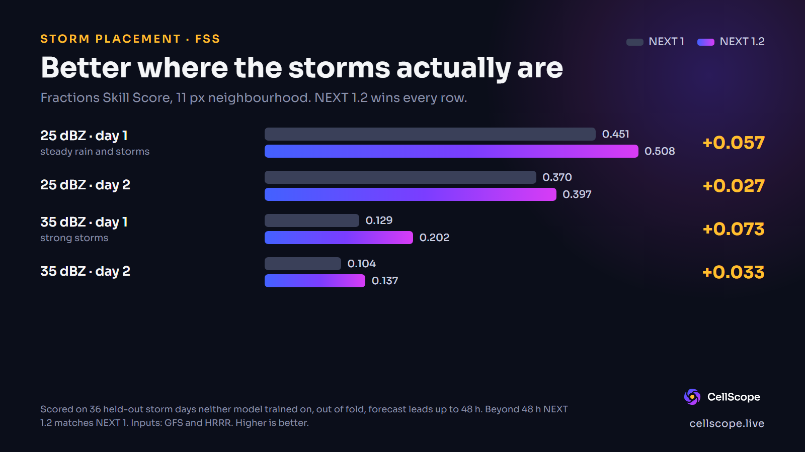
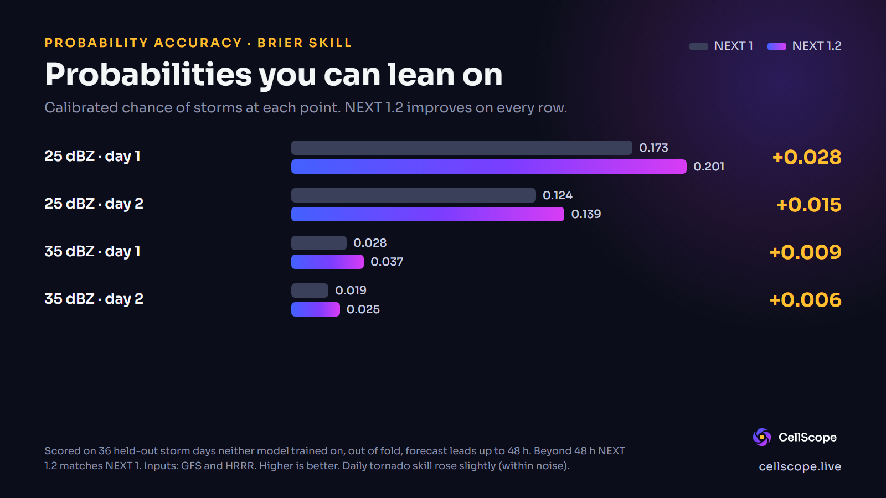

KyCast NEXT 1.2 is live
NEXT 1.2 is now the active KyCast model. On our held-out test days it placed storms better than NEXT 1 on every row we scored. Here are the numbers and the limits.

What changed
NEXT 1 only looked at the GFS model. NEXT 1.2 also reads HRRR, the high-resolution short-range model, for the first 48 hours of a run. HRRR sees the radar-scale detail that GFS smooths over, so it helps most when a storm is only a day away. Past 48 hours, NEXT 1.2 uses exactly the same method as NEXT 1, so those hours are unchanged.
Where the storms are
The Fractions Skill Score asks whether the forecast put storms in about the right place, allowing for a small miss. NEXT 1.2 scored higher than NEXT 1 on all four rows.

How much to trust the percentages
The Brier skill score measures whether a stated chance matches how often the event really happens. It also improved on every row.

What we are not saying
- Small test set. Scored on 36 held-out storm days, 468 samples for the first 48 hours. That is enough to compare two models, not enough to promise how any one day will go.
- Out of fold. Calibration was fitted on some days and scored on others, and neither model trained on any of them.
- No new comparison with raw GFS. This issue compares NEXT 1.2 with NEXT 1 only. Issue 2 said raw GFS still wins on day 1 for some measures, and we have not re-checked that here.
- Still experimental. Not an official forecast. Not for safety decisions. For warnings, use the National Weather Service and your local officials.
What is next
We will rerun this same benchmark as more storm days come in and publish what it says, including if it goes the wrong way.
CellScope products are automated and experimental. For warnings and emergencies, use the National Weather Service and your local officials.